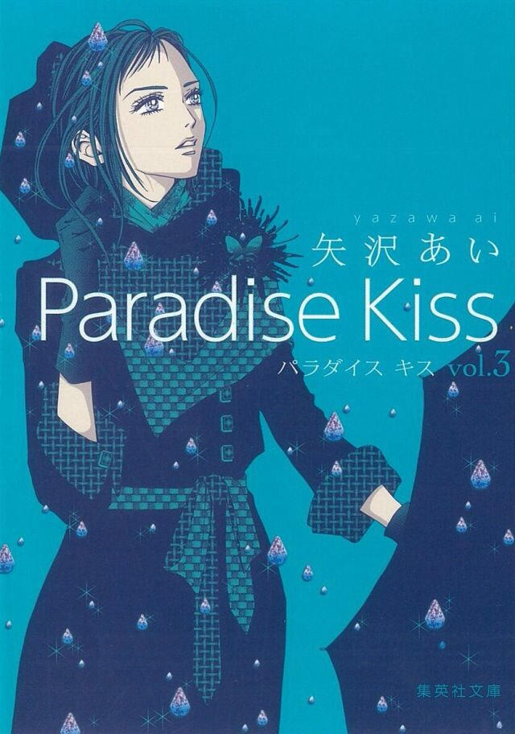
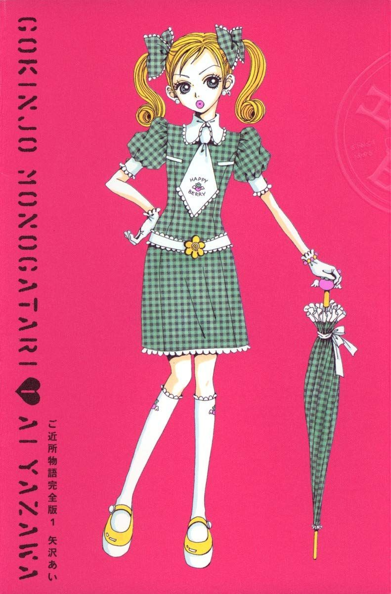
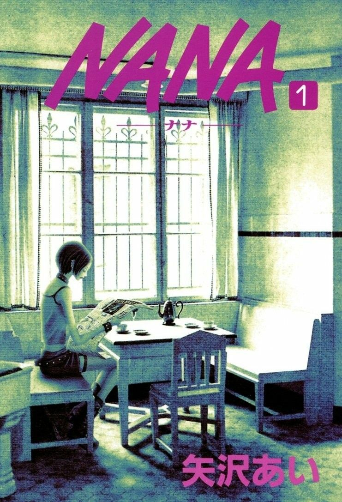
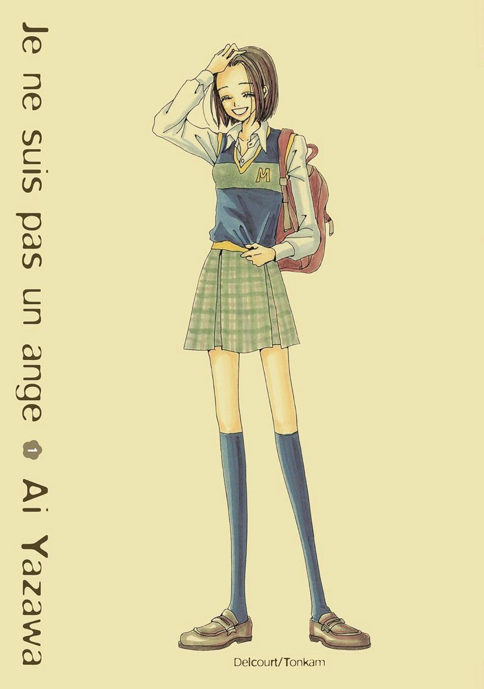

Ai Yazawa's manga
De manga's van Ai Yazawa staan wereldwijd bekend om hun unieke mix van punk-esthetiek, diepgaande emoties en een obsessieve focus op high fashion. Met meesterwerken als NANA en Paradise Kiss schetst ze een eerlijk en vaak bitterzoet beeld van jongvolwassenen die hun weg zoeken in de liefde en de creatieve industrie. Haar gedetailleerde tekenstijl en iconische personages hebben haar tot een van de meest invloedrijke figuren binnen het shōjo-genre gemaakt.



